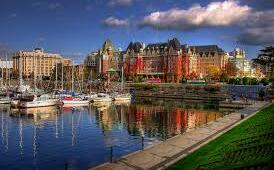
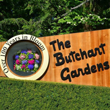
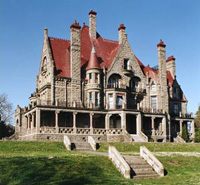

As the capital city of British Columbia, Victoria is a famous worldwide tourist destination. We hope you enjoy your stay in our beautiful city. Below, we list several most mentioned attractions around the city. The charming city offers much more than what we can introduce here, for more information please refer to Tourism Victoria (http://www.tourismvictoria.com/)
|
The Inner Harbour and the Fisherman's Wharf
The inner harbour is at the heart of Victoria down town, with beautiful historical architectures such as the Fairmount Empress hotel and the Parliament Buildings. It also hosts a collection of shops, restaurants and pubs. Our Marriott Victoria hotel is also located here. Close to the Parliament Building you can find the Royal BC Museum (http://royalbcmuseum.bc.ca/). Following the seaside road for the Fisherman's Wharf (http://fishermanswharfvictoria.com /page/gettinghere), which is a marina destination with lovely float homes and the famous fish-and-chips.
|
 |
The Butchart Gardens
 |
The Butchart Gardens is probably the most well-know botany garden on the West Coast. Their stunning, never-wither flowers attract visitors all year round. The garden is accessible from exit 18 on the Highway 17; and there are bus transit (Route 75) available to the garden. Tickets are $29.90 plus tax. Please take a look at their official website (linked on the top) for more information.
|
Craigdarroch Castle
The Craigdarroch Castle is a historic, Victorian-era mansion, with walking distances and many bus routes to Victoria down town. The castle is accessible from the Fort street, which is also called the "Antique Row" of Victoria because the street features many antique and collectible shops. Besides the castle is the Art Gallery of Greater Victoria (http://aggv.ca/) . The gallery features the latest contemporary art exhibitions with a variety of permanent collections, including quite a few pieces by Emily Carr.
|
 |